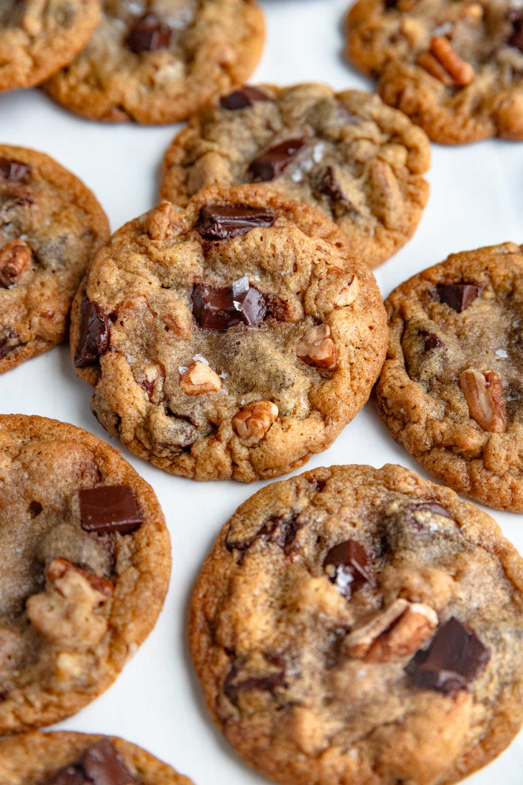

Homepage
Chocolate Chip Cookies

Description
Chocolate chip cookies are so simple and ubiquitous that it seems inevitable they would be invented. A type of drop cookie, they have chocolate morsels (or chopped chocolate) as the titular ingredient.
Likely popularized by soldiers from Massachusetts during World War II, who received the cookies in care packages, they are now loved the world over.
Prep time: 10 minutes
Bake time: 10 minutes
Servings: 4 Cookies
Ingredients
-
230 g melted butter (2 sticks)
-
330 g bread flour
-
5 g salt
-
5 g baking soda
-
100-200 g white sugar
-
1 egg
-
15 g milk
-
5 g vanilla
-
225 g 50-70% dark chocolate chips or semi-sweet milk chocolate chips
Instructions
-
Preheat oven to 375°F
-
Mix the flour, baking soda, and salt in a bowl
-
Using a mixer or whisk, beat the butter, sugar, eggs, vanilla and milk in a separate bowl for a few mins
-
Combine and stir in the dry ingredients, then the chocolate chips
-
Use an ice cream scooper or spoon to make uniform balls of cookie dough to the size you like and evenly space them out on a parchment paper lined baking sheet (you may need more than one sheet depending on the size of the cookies)
-
Bake in the oven one baking sheet at a time for around 8-10 minutes, taking them out when they start to brown
-
Cool for a few minutes then put them on a cooling rack